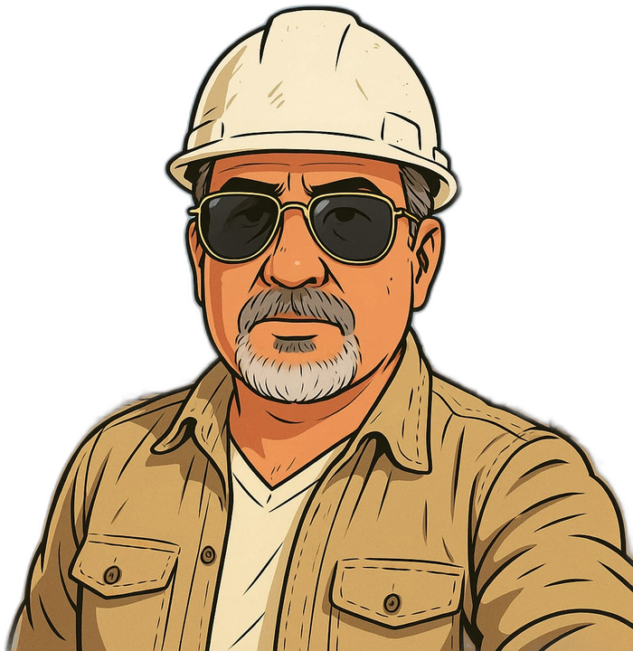

Engineer Vijay
Senior Civil Engineer | 25+ Years Experience | RMC & Logistics Expert
Ask practical questions about concrete, batching plants, logistics, quality control, estimates, MEP coordination, fit-out, and project operations.
Disclaimer: AI responses provide general professional guidance only. They are not a substitute for project-specific design, testing, statutory requirements, or review and approval by the responsible qualified engineer.